🎮 INDÚSTRIA DOS VIDEOJOGOS
Tudo o que sempre quiseste saber sobre o mundo dos jogos, num só lugar
📊 Uma visão geral da indústria dos videojogos
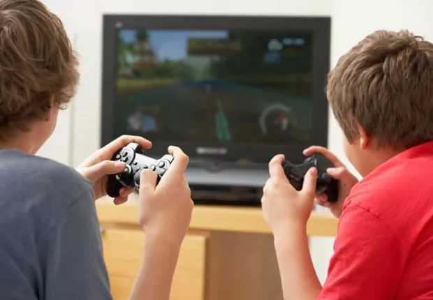
Sabias que a indústria dos videojogos é atualmente o setor de entretenimento que mais fatura no mundo? Pois é, ela já ultrapassou as industrias do cinema e indústria da música juntos. Em 2024, o mercado global chegou aos 200 mil milhões de dólares.
Atualmente, existem mais de 3,4 mil milhões de jogadores espalhados pelo mundo — Isso representa quase metade da população global. E não são só os jovens: a idade média dos jogadores ronda os 32 anos, e 46% são mulheres. Os tempos em que se dizia que "videojogos são coisas de miúdos" já lá vão há muito.

Os principais segmentos do mercado
- Jogos Mobile (telemóvel): Representam mais da metade sendo 51% da receita global.
- Jogos de Consola: 28% do mercado, com PlayStation, Xbox e Nintendo na liderança.
- Jogos de PC: 21% do mercado, com lojas como a Steam e a Epic Games a dominar.
- eSports: Está a crescer a um ritmo louco, com mais de 600 milhões de espetadores.
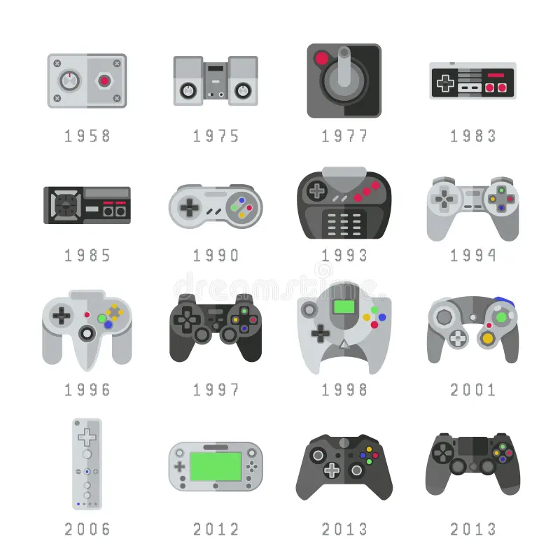
📜 A história dos videojogos — como tudo começou
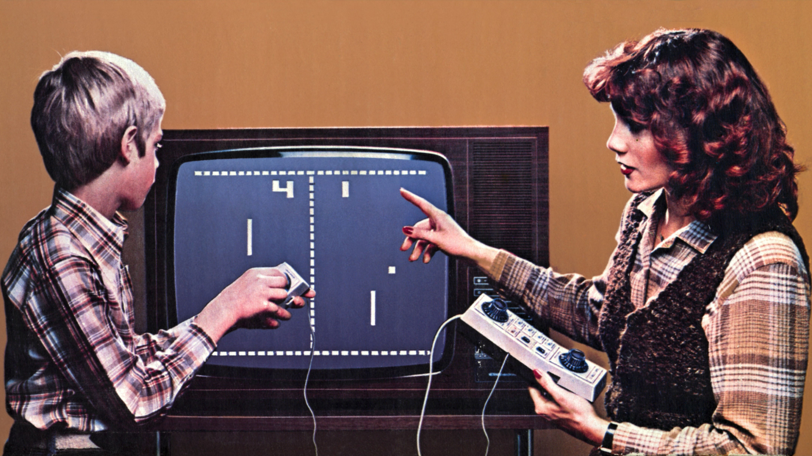
A história dos videojogos começa lá nos anos 50, mas foi em 1972 que a realmente tudo começou a crescer. A Atari lançou o Pong e tornou-se o primeiro grande sucesso comercial nas salas de arcade.
Em 1985, a Nintendo lançou o NES (Nintendo Entertainment System) nos Estados Unidos e salvou a indústria depois do grande crash de 1983. O Super Mario Bros. apareceu e tornou-se um fenómeno mundial. A partir daí, nada voltou a ser igual.
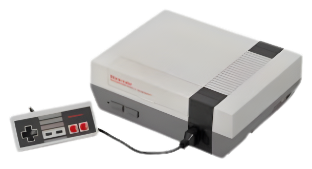
Os anos 90 foram uma verdadeira guerra: 16 bits (Sega Mega Drive contra Super Nintendo), o nascimento do PlayStation da Sony em 1994, e a transição para o mundo 3D com jogos como Super Mario 64 e Final Fantasy VII. Que saudades, hein?
Já nos anos 2000, vieram os jogos online (World of Warcraft, Counter-Strike), a chegada da Xbox da Microsoft, e a revolução dos jogos indie com títulos como Braid e, mais tarde, Minecraft (2011).
• 1972 - Pong (o primeiro sucesso comercial)
• 1985 - NES e Super Mario Bros
• 1996 - Nintendo 64 e PlayStation
• 2004 - World of Warcraft dá início à era MMO
• 2011 - Minecraft mostra o poder dos jogos indie
• 2020 - PS5 e Xbox Series dão início à nova geração
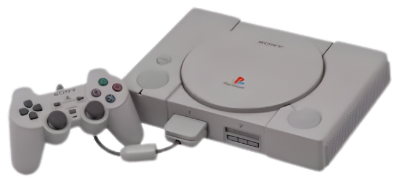
💰 O mercado global dos videojogos — números que impressionam

O mercado dos videojogos não para de crescer. Em 2024, a receita global chegou aos 204 mil milhões de dólares, e as projeções apontam para 250 mil milhões em 2027.
| Região | Receita anual | Crescimento 2023-24 |
|---|---|---|
| Ásia-Pacífico | US$ 89 Bi | +8% |
| América do Norte | US$ 62 Bi | +5% |
| Europa | US$ 38 Bi | +6% |
| América Latina | US$ 9 Bi | +12% |
| Oriente Médio / África | US$ 6 Bi | +15% |

Os 5 países que mais faturam
- 🇺🇸 Estados Unidos: 50 mil milhões de dólares
- 🇨🇳 China: 45 mil milhões
- 🇯🇵 Japão: 20 mil milhões
- 🇰🇷 Coreia do Sul: 8 mil milhões
- 🇩🇪 Alemanha + 🇧🇷 Brasil: cerca de 6 mil milhões cada

🎮 As plataformas onde podes jogar
Hoje em dia, podes jogar em praticamente qualquer lado. A indústria está dividida em três grandes plataformas, cada uma com o seu público e o seu estilo.
📱 Telemóvel (51% do mercado)
Os jogos para telemóvel dominam em número de jogadores — calcula-se que haja 2,8 mil milhões de utilizadores. Títulos como Candy Crush, Genshin Impact, Honor of Kings e PUBG Mobile geram milhões todos os anos, maioritariamente através de compras dentro da aplicação.
_Nero_AI_Image_Upscaler_Photo_Face.jpeg)
🎮 Consolas (28% do mercado)
As consolas são a cara mais tradicional da indústria. As grandes rivais são:
- PlayStation 5 (Sony) — mais de 50 milhões de unidades vendidas
- Nintendo Switch — mais de 130 milhões (um sucesso incrível)
- Xbox Series X/S (Microsoft) — apostam forte no Game Pass
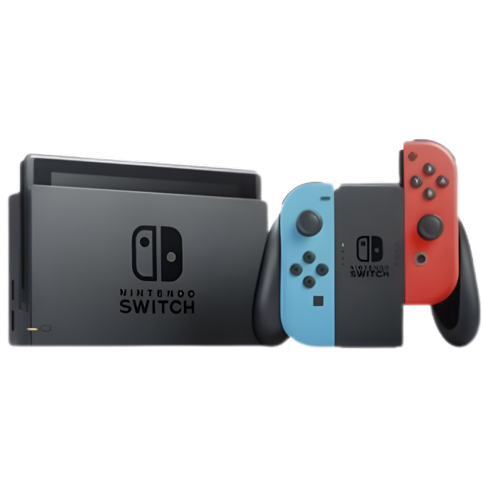
💻 PC (21% do mercado)
O PC continua a ter uma base de fãs leal, especialmente em géneros como estratégia, simulação, MOBA (como o League of Legends) e FPS (Counter-Strike). Plataformas como a Steam (da Valve) e a Epic Games Store mudaram a forma como compramos e jogamos.

🏢 As empresas gigantes por detrás dos jogos
Por detrás dos jogos que amamos, há empresas gigantescas que movem milhões (e biliões). Vamos conhecer as principais?
🎮 Nintendo
Fundada em 1889 no Japão — sim, 1889! — a Nintendo começou por fazer cartas de baralho. Hoje é conhecida por franquias icónicas como Mario, Zelda, Pokémon, Donkey Kong e Animal Crossing.

🎮 Sony Interactive Entertainment
A Sony é a mente por detrás da PlayStation. A PS2 foi a consola mais vendida de sempre (155 milhões!). Hoje, a Sony investe forte em exclusivos de qualidade — The Last of Us, God of War, Spider-Man, Horizon — que fazem qualquer jogador querer jogar.
🎮 Microsoft Gaming (Xbox)
A Microsoft apostou tudo no Game Pass (um serviço de subscrição com mais de 34 milhões de utilizadores) e comprou a Activision Blizzard por 69 mil milhões de dólares. Agora é dona de franquias como Call of Duty, World of Warcraft, Diablo e Candy Crush.
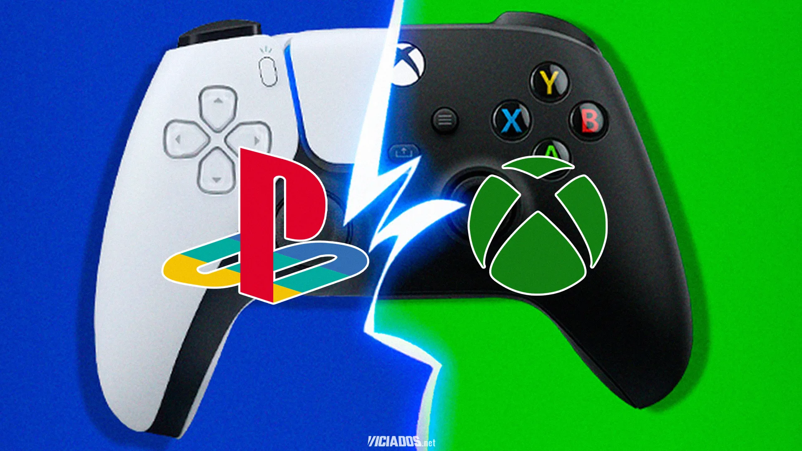
🏭 Outras editoras que deves conhecer
- Electronic Arts (EA) — FIFA/EA Sports FC, Battlefield, The Sims, Apex Legends
- Take-Two Interactive — GTA, Red Dead Redemption, NBA 2K
- Ubisoft — Assassin's Creed, Far Cry, Just Dance, Rainbow Six
- Epic Games — Fortnite, Unreal Engine, a Epic Games Store
- Valve — Steam, Half-Life, Counter-Strike, Dota 2, Portal
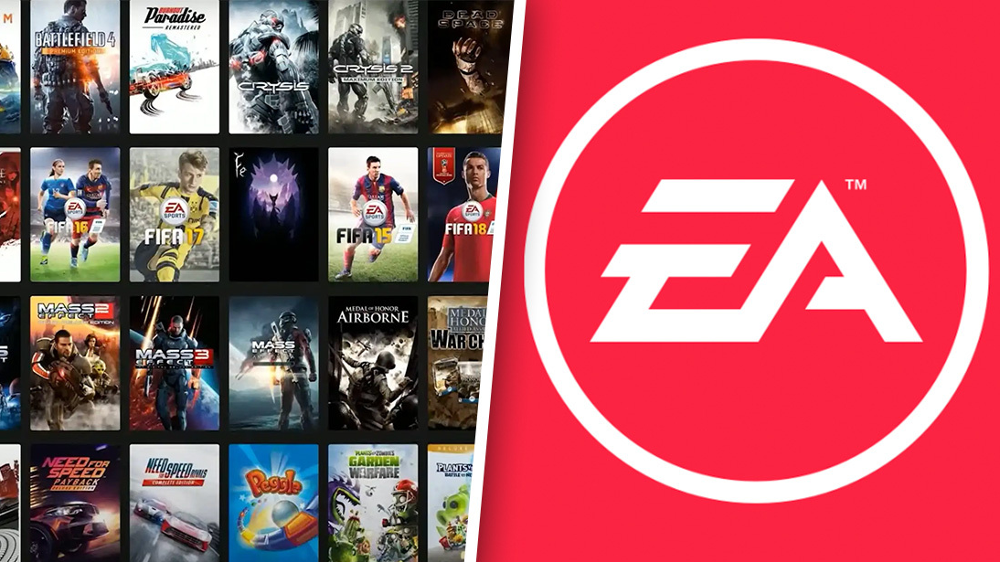
🌍 O impacto cultural dos videojogos — são mais do que brinquedos
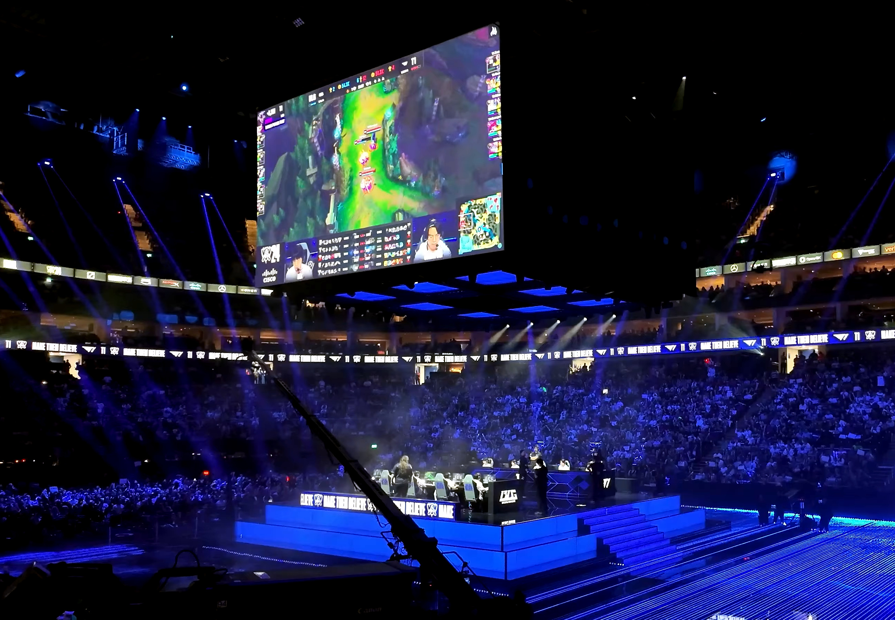
Os videojogos já não são só brinquedos para crianças. Hoje são reconhecidos como arte, ferramenta educativa, espaço de socialização e até desporto. Museus como o MOMA (Nova Iorque) e o Smithsonian Institution já incluíram videojogos nas suas coleções permanentes.
🎨 Videojogos como arte
Jogos como Journey, Gris, The Legend of Zelda: Breath of the Wild e Shadow of the Colossus são frequentemente citados como exemplos de arte interativa. A música, a narrativa, o design visual — tudo contribui para experiências inesquecíveis.

🏆 eSports e eventos de grande escala
As competições profissionais, como o League of Legends World Championship ou The International (Dota 2), atraem audiências de mais de 100 milhões de pessoas. Os prémios monetários chegam a ultrapassar os 40 milhões de dólares num único torneio.
🧠 Benefícios cognitivos e educação
Vários estudos mostram que os videojogos podem melhorar a capacidade de resolução de problemas, a coordenação motora e a memória de trabalho. Alguns jogos são até usados em terapias de reabilitação ou para tratar ansiedade.
🚀 O futuro da indústria

🕶️ Realidade Virtual e Aumentada
A VR ainda é um nicho, mas está a evoluir rápido. Headsets como o Meta Quest, o PlayStation VR2 e o Apple Vision Pro estão a tornar a experiência cada vez mais imersiva. Jogos como Half-Life: Alyx já mostram o que é possível.
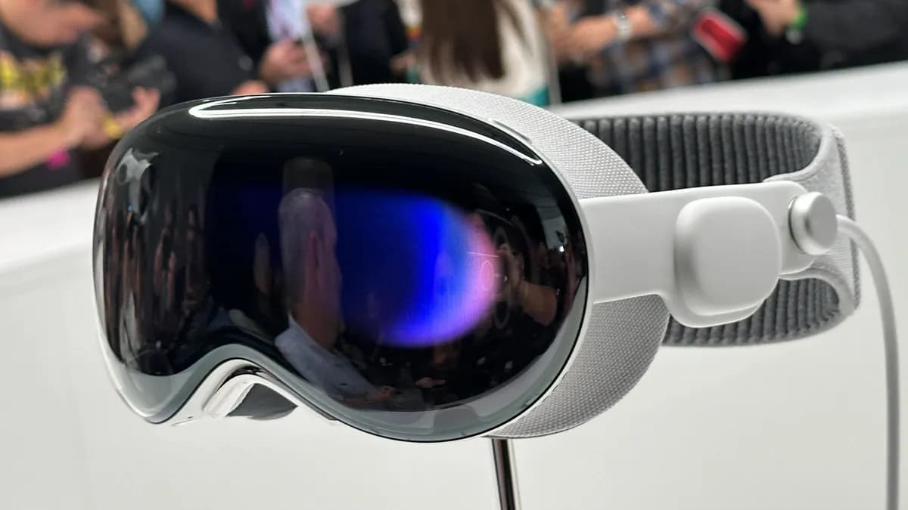
☁️ Cloud Gaming (jogar na nuvem)
Serviços como Xbox Cloud Gaming, NVIDIA GeForce Now e PlayStation Plus Premium permitem jogar em qualquer ecrã, sem precisar de uma consola ou de um PC potente.
🤖 Inteligência Artificial
A IA generativa (ChatGPT, Midjourney, etc.) está a mudar a forma como os jogos são criados. Mundos processuais, diálogos dinâmicos, NPCs mais inteligentes, arte gerada automaticamente... Isto vai ajudar os pequenos estúdios (indie) a fazer grandes coisas.

🎮 Metaverso e mundos persistentes
Empresas como a Epic Games (Fortnite) e a Microsoft (Minecraft) estão a investir em plataformas sociais virtuais — Lugar onde jogos, concertos, marcas e eventos coexistem. O futuro é social e imersivo.
• Mercado global: entre 350 e 400 mil milhões de dólares
• Nuvem e subscrições: 30% do mercado
• Maior crescimento: Médio Oriente, África e América Latina
• Jogadoras: quase 50% do público
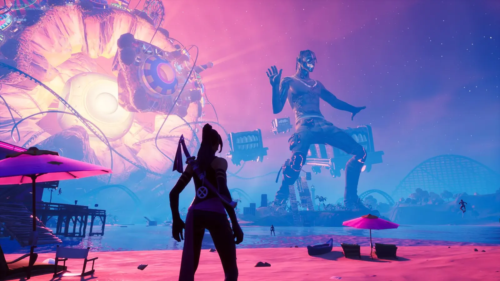